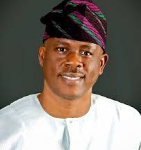
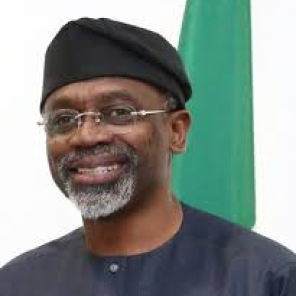
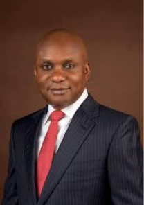
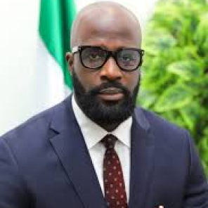
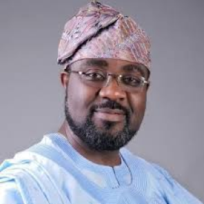

musiliu obanikoro

Musiliu Babatunde Obanikoro (popularly known as Koro) is a Nigerian politician. He served as Senator for Lagos State from 2003–2007, and was later appointed High Commissioner to Ghana. He served as the Minister of State for Defence during 2014.
He attended Texas Southern University where he earned his B.Sc degree in Public Affairs and Master's Degree in Public Administration (M. P. A), served as an intern with Houston adult Probation Department, Houston, Texas and later as the Head of the adolescent unit with Little Flower Children Service (an agency affiliated with New York City Department of Social Service).
He returned to Nigeria in 1989 and has held various offices such as State Commissioner for Home Affairs and Culture, State Deputy Chairman (National Republican Convention) and was elected senator for Lagos Central in April 2003 - 2007.
He attended Texas Southern University where he earned his B.Sc degree in Public Affairs and Master's Degree in Public Administration (M. P. A), served as an intern with Houston adult Probation Department, Houston, Texas and later as the Head of the adolescent unit with Little Flower Children Service (an agency affiliated with New York City Department of Social Service).
He returned to Nigeria in 1989 and has held various offices such as State Commissioner for Home Affairs and Culture, State Deputy Chairman (National Republican Convention) and was elected senator for Lagos Central in April 2003 - 2007.

femi gbajabiamila

Olufemi Hakeem Gbajabiamila (born 25 June 1962), is a Nigerian lawyer, All Progressives Congress Leader, and Speaker of Nigeria's 9th House of Representatives.
He was accepted into the University of Lagos, Nigeria. He graduated from Bachelor of Law (LL.B.) with honors in 1983 and was called to the Nigerian bar in 1984.
He first worked for the law firm, Bentley Edu & Co., in Lagos, and then established his own law firm, Femi Gbaja & Co. He then earned his Juris Doctor from Atlanta's John Marshall Law School in Georgia, USA, passed the Georgian bar exam in 2001, and set up a law firm in Atlanta. While in the USA, he actively participated in the election of Bill Campbell who later went on to become Mayor of Atlanta.
Gbajabiamila was elected to the House in 2003, and re-elected in 2007. He represents the Surulere I constituency of Lagos State (see Nigerian National Assembly delegation from Lagos) in the House of Representatives. He is the Speaker of the House of Representatives.
He was accepted into the University of Lagos, Nigeria. He graduated from Bachelor of Law (LL.B.) with honors in 1983 and was called to the Nigerian bar in 1984.
He first worked for the law firm, Bentley Edu & Co., in Lagos, and then established his own law firm, Femi Gbaja & Co. He then earned his Juris Doctor from Atlanta's John Marshall Law School in Georgia, USA, passed the Georgian bar exam in 2001, and set up a law firm in Atlanta. While in the USA, he actively participated in the election of Bill Campbell who later went on to become Mayor of Atlanta.
Gbajabiamila was elected to the House in 2003, and re-elected in 2007. He represents the Surulere I constituency of Lagos State (see Nigerian National Assembly delegation from Lagos) in the House of Representatives. He is the Speaker of the House of Representatives.

chinedum orji

Chinedum Enyinnaya Orji is a member of the Nigerian Society of Engineers (MNSE), the country's umbrella body for engineers. Between 1976 until 1982, he attended Umuahia Ibeku, after which he attended Government Secondary School in Owerri from 1982 to 1987. He was accepted into the Federal University of Technology, Owerri, and graduated in 1996 with a bachelor's degree in Civil Engineering.
Before entering politics, Rt Hon Chinedum E. Orji carved a niche for himself as a philanthropist extraordinaire who touched the lives of the people through his numerous philanthropic interventions that saw to the execution of projects and the donation of items that directly touched the lives of the people through his Direct Touch Initiative which led to the empowerment of countless Abians, notably youths and women, via skill development, for which he got several prizes and commendations. With the people's support, he was easily elected as the Lawmaker for Umuahia Central State Constituency in the Abia State House of Assembly in the 2015 general elections, and he served as Majority Leader of the House until 2019, when he was re-elected to the 7th Assembly.
Chinedum Enyinnaya Orji is an Anglican Communion Knight.
Before entering politics, Rt Hon Chinedum E. Orji carved a niche for himself as a philanthropist extraordinaire who touched the lives of the people through his numerous philanthropic interventions that saw to the execution of projects and the donation of items that directly touched the lives of the people through his Direct Touch Initiative which led to the empowerment of countless Abians, notably youths and women, via skill development, for which he got several prizes and commendations. With the people's support, he was easily elected as the Lawmaker for Umuahia Central State Constituency in the Abia State House of Assembly in the 2015 general elections, and he served as Majority Leader of the House until 2019, when he was re-elected to the 7th Assembly.
Chinedum Enyinnaya Orji is an Anglican Communion Knight.

ifeanyi momah

Ifeanyi studied law at the University of Lagos and was then sent to the obligatory National Youth Service Corps, where he was stationed in Katsina, a northern Nigerian state, and spent his service year at Malumfashi, a tiny village near Daura.
He went to the University of Aberdeen in Scotland after his service year to complete a legal competence degree in International Jurisprudence law. He then returned to Nigeria, where he graduated from the Nigerian Law School in Bwari, Abuja, and was admitted to the bar. He practiced law for three years at Rickey Tarfa & Co Chambers before moving on to Arthur Obi-Okafor (SAN) & Co Chambers in Asaba.
In 2013, he was hired as the Assistant Director of Legal Affairs and Personal Legal Assistant to SURE-official P's Executive Secretary. He was able to use this medium to assist people, particularly the youths of Ihiala LGA, in gaining access to credit facilities and employment opportunities offered by the federal government at the time.
He went to the University of Aberdeen in Scotland after his service year to complete a legal competence degree in International Jurisprudence law. He then returned to Nigeria, where he graduated from the Nigerian Law School in Bwari, Abuja, and was admitted to the bar. He practiced law for three years at Rickey Tarfa & Co Chambers before moving on to Arthur Obi-Okafor (SAN) & Co Chambers in Asaba.
In 2013, he was hired as the Assistant Director of Legal Affairs and Personal Legal Assistant to SURE-official P's Executive Secretary. He was able to use this medium to assist people, particularly the youths of Ihiala LGA, in gaining access to credit facilities and employment opportunities offered by the federal government at the time.

mike omotosho

Nigeria's Labour Party is now led by Omotosho. He also ran in the 2015 Kwara state general elections, finishing third. In 2017, his mother is said to have been kidnapped. Through training and community development programs.
Omotosho established the Mike Omotosho Foundation to alleviate poverty and empower children. Over 200 people of the rural community have received vocational training from the Foundation, and a N10 million microcredit program has been established to help 300 women start small enterprises. In addition, 500 youths from several local governments in Kwara State were taught employable skills, and the Foundation has a scholarship program for 150 impoverished students from elementary and secondary schools.
In August 2014, the Foundation conducted a medical mission in 12 towns across four local governments in Kwara State, providing free diagnostic services, professional medical advice, and the distribution of free medicines, wheelchairs, and mosquito nets. In 2017, the foundation launched a program that impacted 8,000 people.
Omotosho established the Mike Omotosho Foundation to alleviate poverty and empower children. Over 200 people of the rural community have received vocational training from the Foundation, and a N10 million microcredit program has been established to help 300 women start small enterprises. In addition, 500 youths from several local governments in Kwara State were taught employable skills, and the Foundation has a scholarship program for 150 impoverished students from elementary and secondary schools.
In August 2014, the Foundation conducted a medical mission in 12 towns across four local governments in Kwara State, providing free diagnostic services, professional medical advice, and the distribution of free medicines, wheelchairs, and mosquito nets. In 2017, the foundation launched a program that impacted 8,000 people.